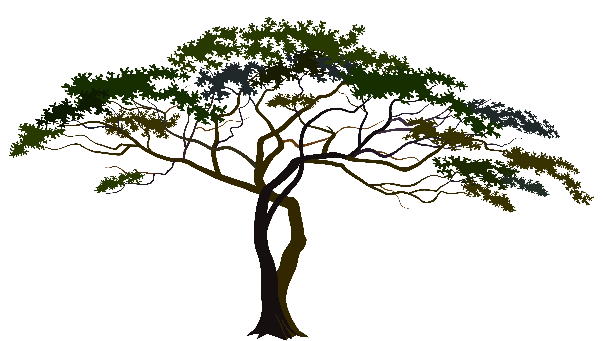
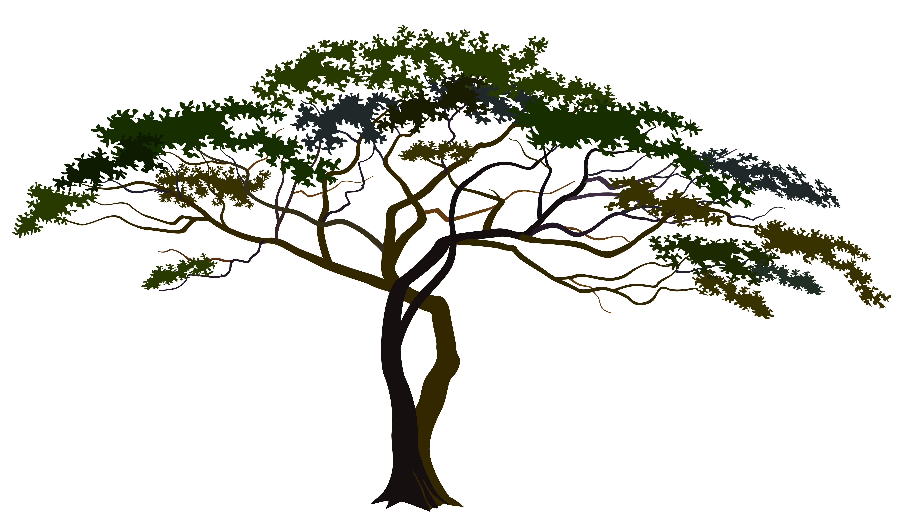

Shrubs play multifaceted roles in savanna ecosystems, contributing to habitat provision, biodiversity maintenance, soil stability, nutrient cycling, and resilience to environmental disturbances. Their presence and characteristics significantly influence the structure and functioning of savanna habitats, highlighting their importance for ecosystem health and sustainability.
ROLE OF THE COMPONENT:
- abitat and Shelter: Shrubs provide habitat and shelter for a wide range of wildlife species, including birds, small mammals, reptiles, and insects. The dense canopy and woody structure of shrubs offer protection from predators, harsh weather conditions, and direct sunlight.
- Nutrient Cycling: Shrubs play a role in nutrient cycling by absorbing nutrients from the soil through their roots and releasing them back into the environment through leaf litter decomposition. The cycling of nutrients helps maintain soil fertility and supports the growth of other vegetation within the savanna ecosystem.
 
